voxbox · the touch screen
test 22 · made and tried on one box
Voxbox
For the FM-1. Most of it for AISLING.
A touch screen for the FM-1 that paints what it plays, and puts firmware on it from a card.
The demo
Watch it play
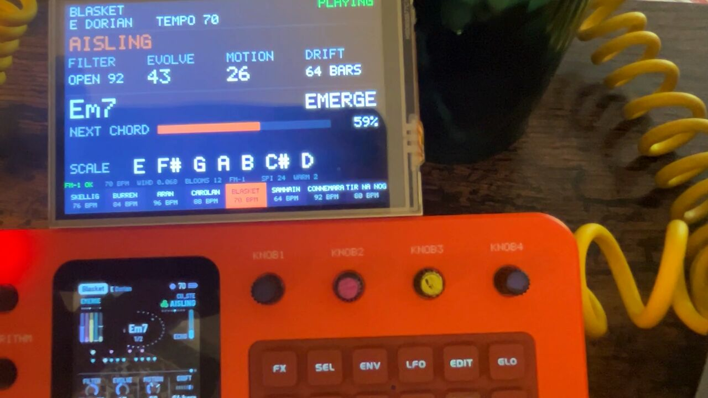
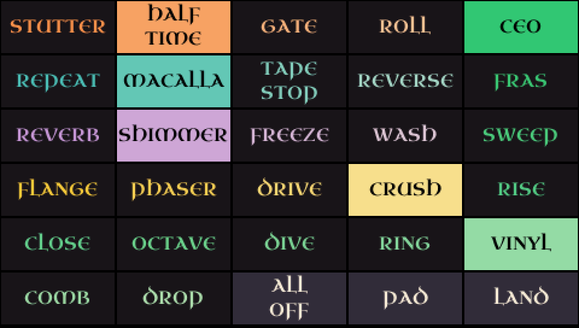
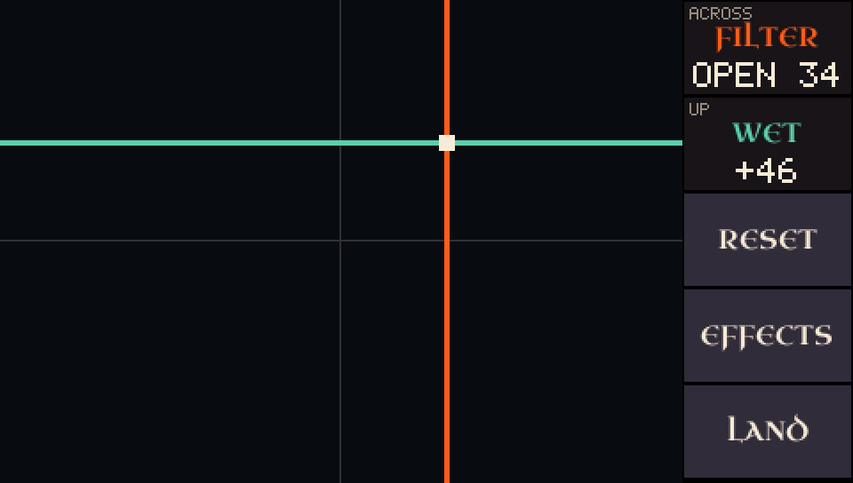
New · no computer needed
Firmware from a card
Keep firmware packages on a microSD card in the box, and put one on the FM-1 by touch. Change back the same way.
- 1
Fill the shelf
Copy
.fwscpackages into a folder calledFM1at the top of the card. MOUNT ON MAC on the box's card page lends the card to a computer as a USB drive, so it never has to come out. - 2
Pick one
MENU, CARD, then FIRMWARE FOR THE FM-1. Each package shows under its own file name, with what it says it is and its size. Up to 20, five to a page.
- 3
Install
Touch a row, INSTALL, then SURE?. The page shows each step and how far the write has got, then says which firmware is now on the FM-1.
tried: AISLING 1.5, AISLING FX-1 1.1, Choralroot 0.41, Handy-1 0.3.0, FMini-1 2.6.0
What it can put on. Felucca .fwsc packages that carry Felucca's update loader, onto an FM-1 whose present firmware has Felucca's updater in it (AISLING and AISLING FX-1 do). A package without the loader, the stock firmware for one, is refused, because the box could put nothing else on afterwards. An FM-1 still on its stock firmware gets its first AISLING from the install page, on a computer.
If it stops part way, the FM-1 waits in its loader, through power cuts too, and INSTALL again finishes it. If the box can't finish, a computer still can: hold OCT- as the FM-1 powers on and use the install page.
Tried on one box with two FM-1s, in November 2026: the five above went on, and AISLING went back on after each. Other packages are untried. The installing code is a port of AISLING's own installer, which is Leo Kuroshita's.
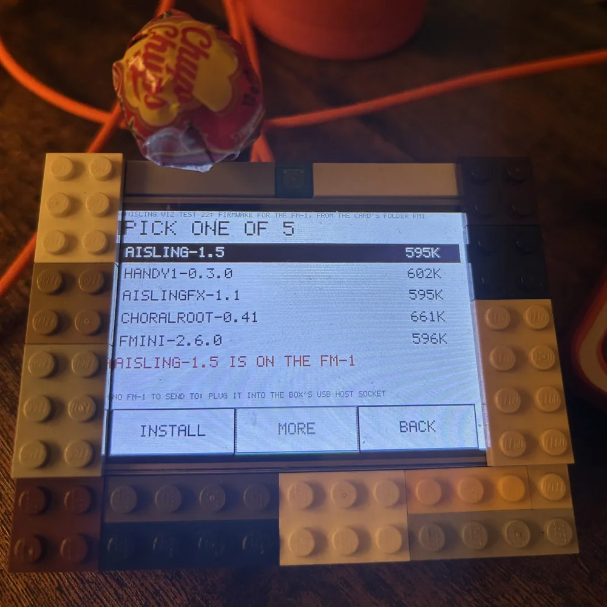
- Also new
A landscape that answers
A touch drops paint, a drag pulls it into a swirl. Drag further and the whole picture is the pad: across and up move two knobs, or two held effects on AISLING 1.4 and later.
- Also new
MENU
At the right of the status line. It opens calibration, the card's page and the look. Taps act sooner than they did.
- Also new
Dark or light
LOOK turns the box's own pages to ink on white. The landscape keeps its own ground.
- Also new
Settings on the card
The box keeps its settings in
SETTINGS.TXTon the card, a text file you can edit. With no card it runs as before, without the shelf.
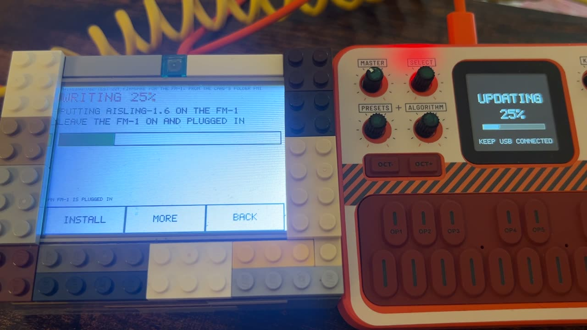
Film · 1 minFirmware changed by touch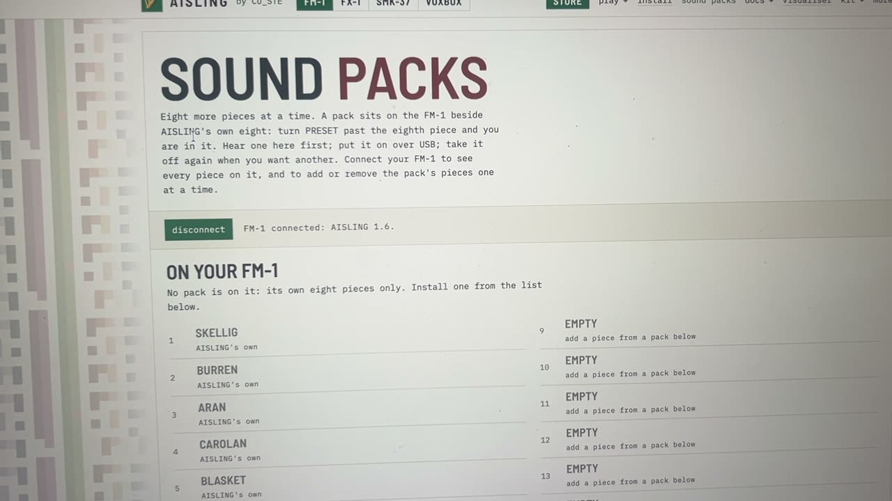
Film · 1 minA sound pack from the browserHow to, start to finish
- Get a card ready. Any small microSD card, formatted FAT32 (FAT16 works too). A card of 64 GB or more comes as exFAT: format it FAT32 on a computer first. The box never formats a card.
- Get the packages. A package is one file ending
.fwsc. AISLING's is on its release page, AISLING FX-1's on its own. Other people's firmware is at The Firmware Hub. - Put them in a folder called FM1, at the top of the card. Either put the card in a computer, or leave it in the box: plug the box's socket marked USB into the computer, then MENU, CARD, MOUNT ON MAC. Eject the card on the computer when you're done, or touch UNMOUNT.
- Plug the FM-1 in, into the box's socket marked PIO-USB, switched on, with firmware on it that has Felucca's updater (AISLING has). The page says AN FM-1 IS PLUGGED IN.
- Open the shelf. MENU, CARD, then the bar FIRMWARE FOR THE FM-1. It says PICK ONE OF, and lists each package with its size. MORE turns the page when there are more than five.
- Touch a package, then INSTALL, then SURE?. Touching another row takes SURE? back. The box reads the whole file first, and refuses one it can't put on, saying why.
- Leave it alone while it runs. The page shows ASKING WHO IT IS, THE FM-1 CHECKS IT, TO ITS LOADER, WRITING with a bar, then RESTARTING. Keep the FM-1 on and plugged in. No button does anything until it ends.
- Read the last line. It names the firmware and says it IS ON THE FM-1. If it says something else, it also says whether anything was written and what to do; most often that is INSTALL again.
- To go back, do the same with the other package. Keep AISLING's on the card so there is always a way home.
What the screen shows
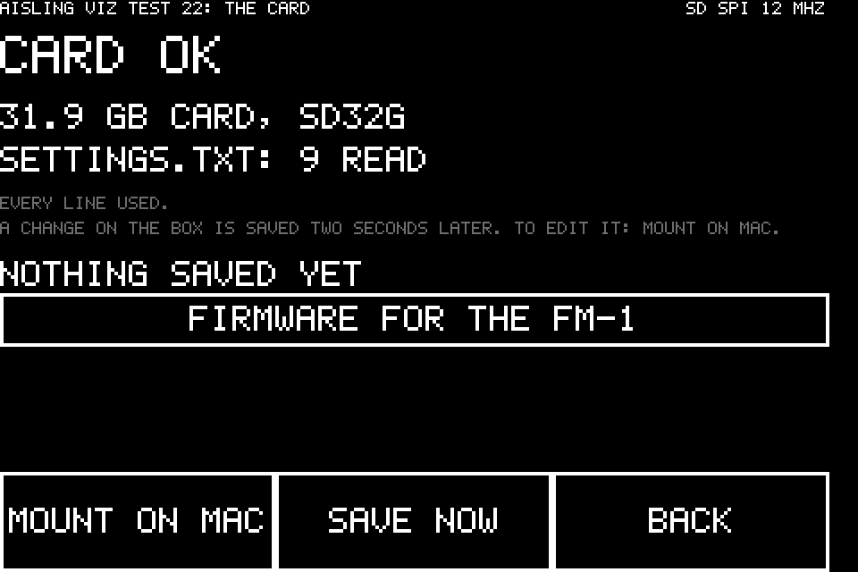
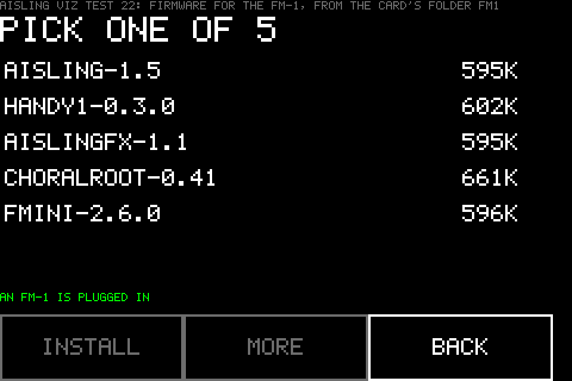
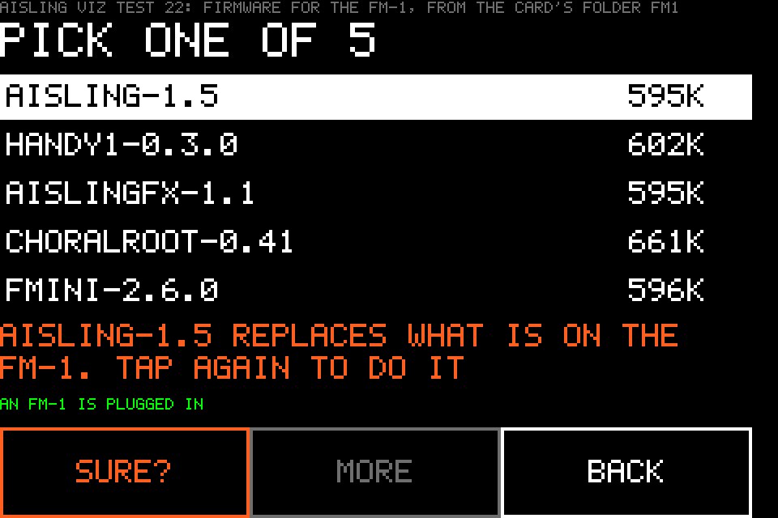
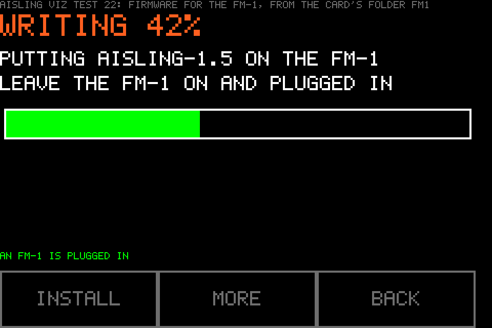
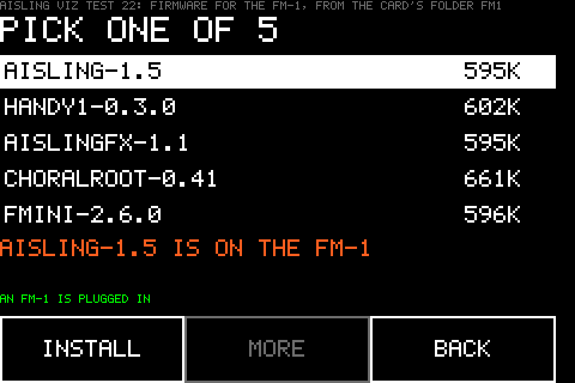
These five are drawings, made from the box's own page layout and lettering in its dark look, with example packages; they are not photos. The photo above is the real thing. AISLING 1.6 has gone on from the card too, over Handy-1 0.3.0: the first film above is that install.
Other firmware
Does it work with other firmware?
Yes. The landscape paints from any firmware that sends its notes over USB MIDI. How much more you get depends on what's on the FM-1.
- All of it
AISLING
The landscape, the FM-1's own screen, its knobs under your finger, the effects and the pad.
- A lot
Firmware with a screen reader
About 47 in the store carry Charles Vestal's reader. The box paints their notes by pitch and shows what their screen says, as a page of text. It sends them none of AISLING's controls.
tried: AMB-1 1.3.2 - The picture
Anything else
The landscape, painted by pitch: low notes the bog, high notes the sky. The box says it isn't AISLING and sends nothing more.
tried: stock V16
Tried on the box on 15 November 2026, on an earlier build with the same code for it. Putting another firmware on the FM-1 is a different thing: see firmware from a card.
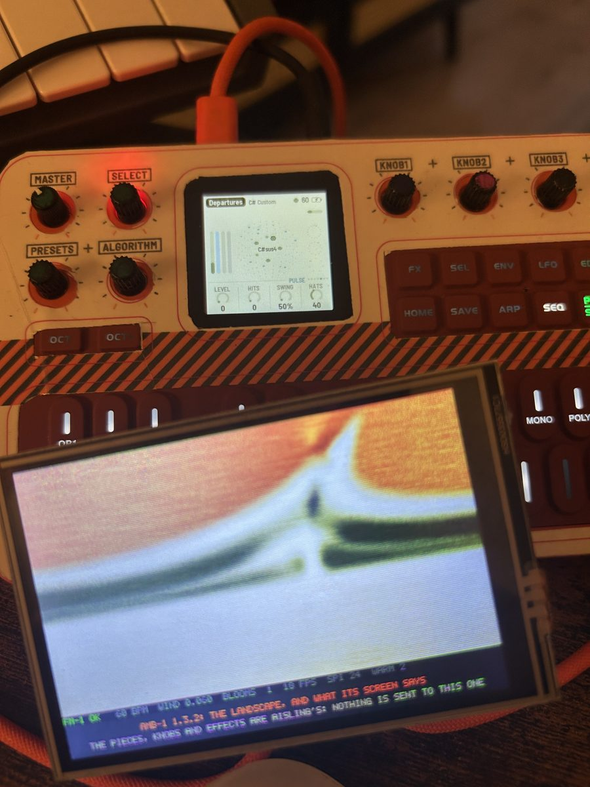
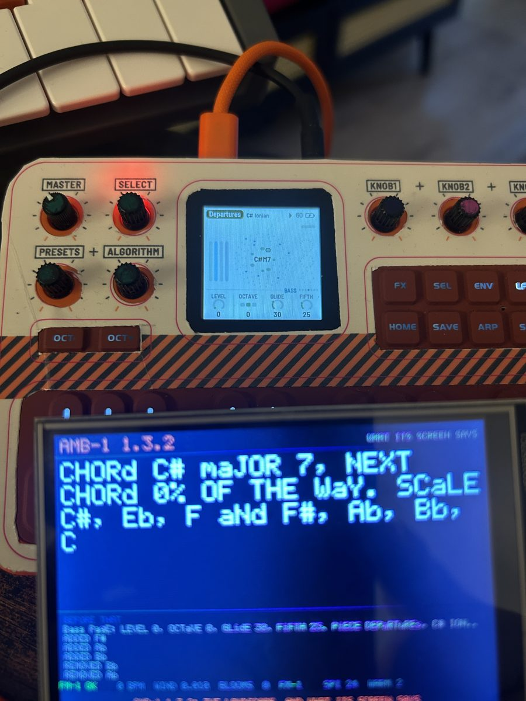
Get one
How do I buy it?
It's a kit you put together: two boards that push onto each other, two cables, a card if you want the shelf, and a free file. No soldering on mine.
The store's card has the same parts as the list here, with the rest of the FM-1's kit. No FM-1 yet? Where to buy one.
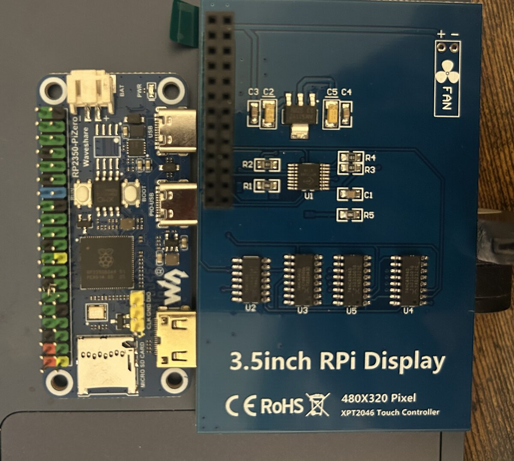
The board
Waveshare RP2350-PiZero. The brains, with two USB-C sockets; the FM-1 plugs straight into one.
The screen
ELEGOO 3.5" touch screen for Raspberry Pi, 480 × 320, with a pen. It pushes onto the board's header.
Power
Any USB charger, power bank or computer. The box powers the FM-1 too. A power bank must stay on at a small load.
A microSD card
Only for the firmware shelf and the settings file. FAT32 or FAT16: a card of 64 GB or more comes as exFAT and needs formatting FAT32 on a computer first.
any small one
The program
A ready-built file you drag onto the board. Test 22, for this board and this screen only.
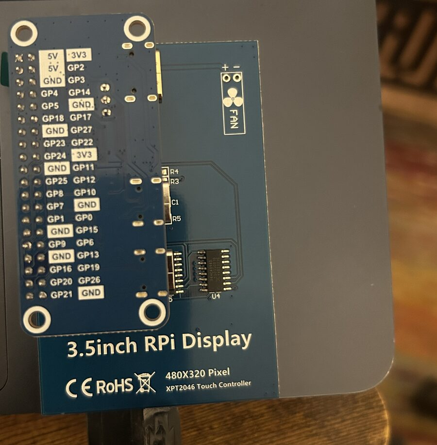
Six steps
- Load the program first, before the screen goes on. Hold the board's BOOT button while you plug its socket marked USB into a computer; drag the file onto the RP2350 drive that appears. Unplug.
- Push the screen on, so its socket covers header pins 1 to 26 and the screen lies over the board. The picture's top is along the edge the cables leave from.
- Plug in the FM-1, into the socket marked PIO-USB, with a data cable.
- Plug in power, into the socket marked USB.
- Turn MIDI out on, in AISLING's Setup page on the FM-1.
- Play. Tap the landscape for the FM-1's page, and tap that for the effects. LAND goes back. MENU, at the right of the status line, opens calibration, the look and the card.
Never power both of the board's sockets from two sources at once: they share one power line, which also feeds the FM-1.
A stand from bricks
Build it a Lego tray
A tray of ordinary Lego bricks that holds the VOXBOX at a tilt: 50 parts, seven steps, built once.
The model, a BrickLink shopping list, the steps, a photo and a film of the first one, and the script it was designed with.

Other firmware, part by part what the box does with each page
The box asks the FM-1 who it is every two seconds, using Charles Vestal's screen-reader protocol. An FM-1 that names itself AISLING gets everything. One that names itself something else, or says nothing, is a guest:
| On the screen | With AISLING | With any other firmware |
|---|---|---|
| The landscape | Paints the sky from the flute, the hills and fields from the harps, and the bog from the drone. | Paints, if the firmware sends its notes over USB MIDI, by pitch: under C3 the bog, to B3 the fields, to B4 the hills, above that the sky. A note never let go is let go after 8 seconds. |
| Switching pages, MENU, the card | Works. | Works. That part is the box's own and doesn't ask the FM-1 anything. |
| The strip of pieces | A tap changes the piece, and the strip follows the FM-1's piece however it was picked. | Two lines saying it isn't AISLING. Nothing is sent. |
| The FM-1's page | The FM-1's own screen, bigger, kept up to date as you play. | With a screen reader: the firmware's name, and what its screen says as a page of text. Without one: "not AISLING". |
| Turning the knobs from the screen | Drag a knob sideways and the FM-1's knob turns. | Nothing to turn. The box only turns a knob whose values it knows, and it knows AISLING's. |
| The effects and the pad | A tap holds an effect or lets it go; a finger on the pad moves two of Filter, Wet, Energy and Chorus, or on 1.4 and later the amounts of two held effects. | They give way to the landscape. None of AISLING's controls go to another firmware. |
| PERFORM's flash | A held effect's colour and name fill the box for a second. | Never shows. |
| Firmware from the card | Works. | Works if that firmware has Felucca's updater in it. Tried from Choralroot 0.41, Handy-1 0.3.0 and FMini-1 2.6.0. |
About 47 firmwares in the store carry the reader: 41 with their own words (X0X, FoMni-1, AMB-1, Polly, MOSS-1 and so on) and 6 with the common words only. As guests, only AMB-1 and the stock firmware have been tried.
How it was done USB host, a landscape in C, the screen reader
- The FM-1 is a USB MIDI device, and AISLING sends everything it plays out of its USB socket: the drone, the harps and the flute on channels 1 to 4, and the clock. The RP2350 runs as a USB host on its second socket (in software, with Pico-PIO-USB), so the FM-1 plugs into it as it would into a computer.
- The landscape is a cut-down version of the visualiser's, rewritten in C for a 480 × 320 screen. Each note lays colour into its layer and the clock sets the pace. It draws about ten frames a second over SPI.
- The FM-1's page comes from what AISLING says to a screen reader: every time its screen changes, it sends the page and its values as text over MIDI (the FM-1 Screen Reader protocol, by Charles Vestal). The box reads that text and draws the page.
- The knobs use something AISLING has listened for since 1.2: MIDI CC 16 to 19 turn the four knobs of whatever page is on its screen. The box knows each knob's values in order, so a drag steps through them from where the knob is and never jumps. If the FM-1 doesn't say the knob back, the box says so in red.
- The strip of pieces sends a program change, 0 to 7, back to the FM-1.
- The effects and the pad use what AISLING 1.3 added: a MIDI CC for each of the 27 effects (64 or more holds it, less lets it go) and fixed CCs for Filter, Wet, Energy and Chorus. They work from any page of the FM-1, though only PERFORM shows them on its own screen. On AISLING 1.4 and later a CC from 64 to 127 is how much of the effect, and the pad sets it.
- Firmware from the card is the computer's part of a Felucca update, done by the box: a port to C of AISLING's own installer (Leo Kuroshita's). The firmware on the FM-1 checks the package and starts its update loader; the loader reads the package from the box and writes it. The card is read with ChaN's FatFs over the board's own microSD slot.
It's all new code, on the Raspberry Pi Pico SDK with TinyUSB and Pico-PIO-USB, under the GPL like AISLING: the source is on GitHub. The screen's settings were written from the panel chip's datasheet and tuned by eye on a calibration screen. It was built up in 22 test builds, from "does the screen light up" to the firmware shelf. Most were tried on the board as they went; each build's notes say which.
Questions knobs, saving, colours, the code
Which AISLING do I need?
1.4 or later for all of it. The box knows 1.4's 28 pages and their knobs, and has not been checked page by page against 1.5 or 1.6, so a page or a value those added may show wrong or not turn from the box. The landscape, the strip and the card's shelf don't depend on that. On 1.3 the effects are on or off, with no amounts. On 1.2, use the older build under The files, below.
What about the FM-1's stock firmware?
Tried on 15 November 2026: stock V16 sends the notes you play over USB MIDI and the landscape paints from them by pitch. It doesn't answer when asked who it is, so the box says it isn't AISLING and sends it nothing more. The box can't put firmware on a stock FM-1, and won't put the stock firmware on one.
What if the FM-1 doesn't take a turn?
While you drag, the box shows the value it's sending in orange, until the FM-1 says the knob back. If nothing comes back within a second and a half (on an older AISLING, say, or with the grid up), it puts the FM-1's own value back and says THE FM-1 DIDN'T TAKE IT. The screen never keeps a value the FM-1 doesn't have.
Will a new AISLING break the FM-1's page?
It could, if a release changes the words AISLING uses to describe its screen; the box would then need an update to match. The landscape doesn't depend on them.
Finger or pen?
Either: the screen comes with a pen. It's a resistive panel, so press it rather than brush it. A knob only turns once your finger has moved about 10 pixels sideways, so resting a finger on one does nothing, and a touch on the knobs never switches the page.
If I turn a knob on the FM-1, does the screen follow?
Yes. The page is rebuilt from what the FM-1 says, so a knob turned on the FM-1, a new page or a new piece shows on the screen too. So does the strip of pieces.
Can every knob be turned from the screen?
Nearly. Setup's four can't (AISLING doesn't take them over MIDI), so their labels show dimmed, and nor can Mode while it says Custom.
Does turning a knob on the screen save it?
No. It's the same as turning the knob on the FM-1: NOT SAVED shows, and you save on the FM-1 as usual. Nothing is stored on the box.
Does the box change what the FM-1 plays?
Only when you touch it: a tap on the strip changes the piece, and a drag turns a knob. The rest of the time it listens to the FM-1's MIDI and asks what's on its screen, which changes nothing.
Can I play notes from the screen?
No. It turns knobs and picks pieces; the FM-1 still does the playing.
Can I get the code?
Yes: github.com/stephencummins/aisling-viz-box, under the GPL-3.0 like AISLING. Each of the
22 test builds has its own folder and notes. The ready-built file
is test 22's, and the licences of the libraries inside it are in the source's NOTICES.md.
Why are the colours paler than on a computer?
It's a cheap panel, and it squashes its brightest colours together, so the visualiser's vellum shows white. The box sets the panel's tone curve every time it starts, which helps the middle and dark colours. It still looks good.
Do I need a Raspberry Pi?
No. The RP2350 is the chip from the Raspberry Pi Pico 2 and does the whole job on its own; the screen just happens to be made for a Pi's header.
Does it work with the visualiser on a computer?
They're separate: the box is for when the FM-1 is on its own. The visualiser in Chrome or Edge still paints the full landscape from an FM-1 plugged into the computer.
The files sizes, checksums, older builds
The screen covers the board's BOOT button, which is why the program goes on first. After that, a new build loads over USB with the screen in place: the source's README has the two lines.
The file is 408,064 bytes; its SHA-256 is
b0c474d081caf96386a0402fdf56f1fc6ff50646c2c857816726997074c0c305. It's a hobby build with no warranty,
tried on one board. Its picture is turned half a turn from test 8's, so the cables leave from the top edge.
Test 8 (298,496 bytes, for AISLING 1.3, the picture the old way up) and
test 15 are still here. Still on 1.2? Use
the build made for 1.2 (233,984 bytes, SHA-256
60510ee6d58301f22f45206a0a64d5a9527fbd9dfe7391b9a7f87dad48945adc): it has 1.2's PERFORM knobs and no
flash. The build before test 8, without the effects and the pad, is still here:
test 7.
No soldering on mine: the board came with its header fitted and the screen pushes onto it. If yours comes without a header, it needs one soldered on first. Something to prop it up behind the FM-1 helps.
Links marked ad are affiliate links: if you buy through one, I may earn a small commission, at no cost to you. As an Amazon Associate I earn from qualifying purchases. "Tried" means tried by me, on one FM-1 running AISLING, not a promise from any maker. The screen-reader protocol is Charles Vestal's (fm1-reader). M-VAVE and FM-1 are trademarks of their owners, as are Waveshare, ELEGOO and Raspberry Pi. AISLING is not affiliated with any of them.